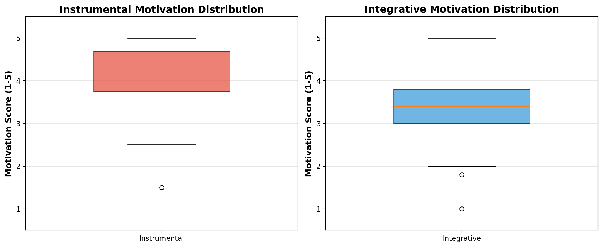
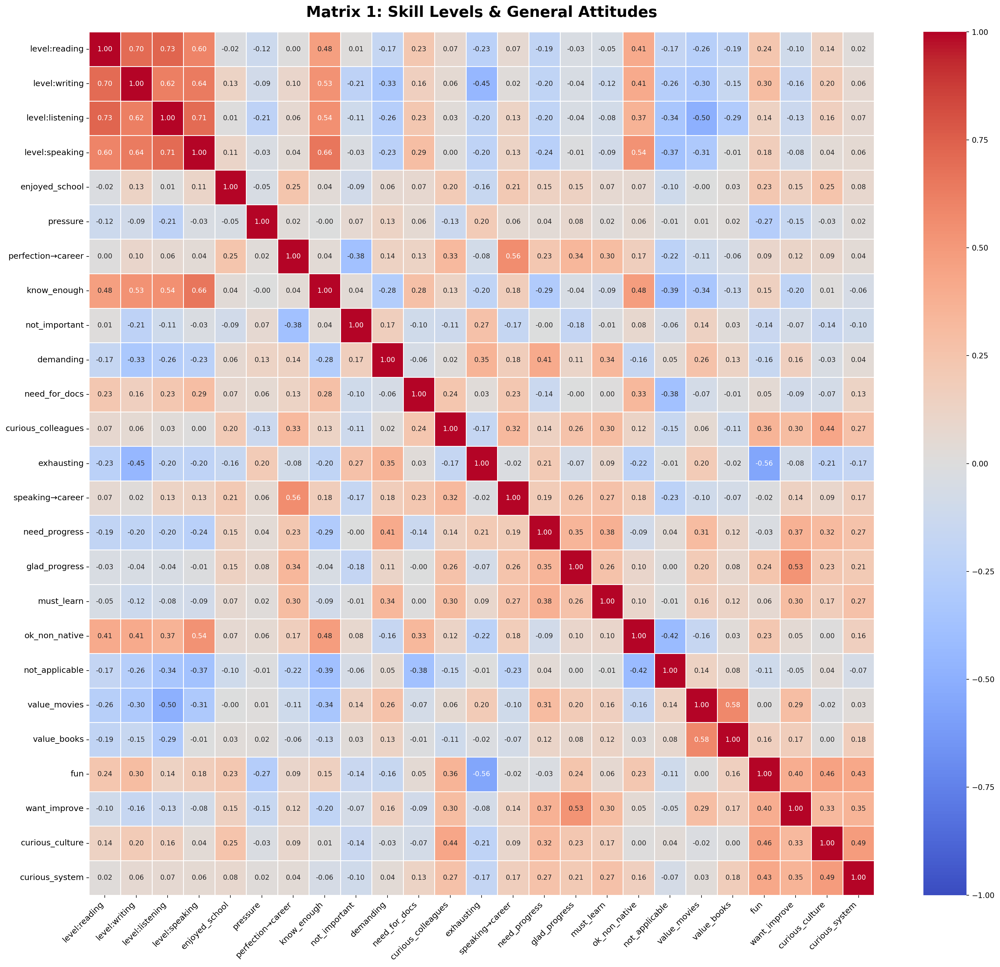
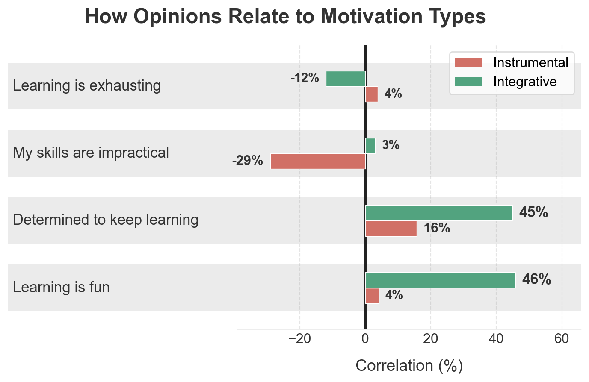

“Learning English would never seem pointless if I had looked beyond my career goals.” — Survey Respondent
Researchers distinguish between two primary forms of motivation: Instrumental (career-oriented) and Integrative (cultural). While career goals often spark the journey, our data suggests that genuine cultural curiosity is what sustains it.
This page analyses how these different motivations correlate with learning success, satisfaction, and the choice of methods.
Code
import pandas as pdimport numpy as npimport matplotlib.pyplot as pltimport seaborn as snsfrom scipy.stats import spearmanrfrom matplotlib.patches import Patch, Rectangle# Set modern font family for all chartsplt.rcParams['font.family'] ='sans-serif'plt.rcParams['font.sans-serif'] = ['Arial', 'Helvetica', 'DejaVu Sans', 'sans-serif']# Load datadf = pd.read_csv('../data/form_data.csv')print(f"Total respondents: {len(df)}")
Total respondents: 102
Motivation Types
We analyse two main types of motivation for learning English:
Integrative Motivation: Learning English for personal enrichment, cultural understanding, and connection with English-speaking people
Instrumental Motivation: Learning English for practical purposes such as career advancement and professional requirements
Code
# Define the columns for each motivation typeinstrumental_col_names = ['perfection_is_key_to_career','need_english_for_work_docs','speaking_is_key_to_career','must_learn',]integrative_col_names = ['curious_about_english_colleagues','value_original_movies','value_original_books','curious_about_english_culture','curious_about_english_system',]# Build the motivation columns as the mean of their component questionsdf['instrumental'] = df[instrumental_col_names].mean(axis=1)df['integrative'] = df[integrative_col_names].mean(axis=1)# Calculate average scoresavg_instrumental = df['instrumental'].mean()avg_integrative = df['integrative'].mean()# Create simple comparison bar chart with professional stylingfig, ax = plt.subplots(figsize=(7, 5))motivation_types = ['Instrumental', 'Integrative']averages = [avg_instrumental, avg_integrative]# Place bars closer together by using custom x positionsx_positions = np.array([2.2, 3.8])colors = ['#e76f62', '#2ca06c'] # Muted coral and greenax.set_xlim(0, 6)# Slightly narrower bars, closer togetherbars = ax.bar(x_positions, averages, color=colors, width=0.7, zorder=3)# Round the bar corners and add subtle edge for definitionfor bar in bars: bar.set_capstyle('round') bar.set_edgecolor('white') bar.set_linewidth(0.8)# Add value labels on top of barsfor bar, avg inzip(bars, averages): height = bar.get_height() ax.annotate(f'{avg:.2f}', xy=(bar.get_x() + bar.get_width() /2, height), xytext=(0, 6), textcoords="offset points", ha='center', va='bottom', fontsize=16, fontweight='600', color='#333')# Stylingax.set_ylabel('Average Score (1-5 scale)', fontsize=16, labelpad=30, color='#333')ax.set_title('Motivation Strength Amongst Respondents', fontsize=16, fontweight='bold', pad=10, color='#333')ax.set_xticks(x_positions)ax.set_xticklabels(motivation_types)ax.set_ylim(0, 5.5)ax.set_yticks([1, 2, 3, 4, 5])# Minimalist axes and grid (match other charts)ax.yaxis.grid(True, linestyle='--', alpha=0.25, color='#999', zorder=1)ax.set_axisbelow(True)ax.spines['top'].set_visible(False)ax.spines['right'].set_visible(False)ax.spines['left'].set_visible(False)ax.spines['bottom'].set_color('grey')ax.spines['bottom'].set_linewidth(0.5)# Baseline at zeroax.axhline(y=0, color='black', linewidth=1.0)# Tick stylingax.tick_params(axis='y', labelsize=14, colors='#333', length=0, pad=10)ax.tick_params(axis='x', labelsize=16, colors='#333', length=0, pad=10)ax.margins(x=0.12)# Backgroundax.set_facecolor('white')fig.patch.set_facecolor('white')fig.tight_layout(pad=1.5)plt.show()print(f"Average Instrumental Motivation: {avg_instrumental:.2f}")print(f"Average Integrative Motivation: {avg_integrative:.2f}")

Average Instrumental Motivation: 4.13
Average Integrative Motivation: 3.40
For those interested in the detailed distribution, here’s a more detailed view:
This heatmap shows how respondents are distributed across the two types of motivation. Each cell shows how many respondents have that combination of integrative (x-axis) and instrumental (y-axis) motivation scores.
Code
# Create bins for the heatmap with 0.5 incrementsdef bin_motivation(value):"""Bin values to 0.5 increments: 1.0, 1.5, 2.0, 2.5, 3.0, 3.5, 4.0, 4.5, 5.0"""if pd.isna(value):return np.nanreturnround(value *2) /2df['instrumental_binned'] = df['instrumental'].apply(bin_motivation)df['integrative_binned'] = df['integrative'].apply(bin_motivation)# Create a pivot table for the heatmapheatmap_data = pd.crosstab( df['instrumental_binned'], df['integrative_binned'], dropna=False)# Ensure all values from 1.0 to 5.0 in 0.5 increments are presentbins = [1.0, 1.5, 2.0, 2.5, 3.0, 3.5, 4.0, 4.5, 5.0]for b in bins:if b notin heatmap_data.index: heatmap_data.loc[b] =0if b notin heatmap_data.columns: heatmap_data[b] =0# Sort index and columns, then reverse index to flip y-axis (5 at top, 1 at bottom)heatmap_data = heatmap_data.sort_index(ascending=False).sort_index(axis=1)# Create the heatmap with professional stylingfig, ax = plt.subplots(figsize=(12, 9))sns.heatmap( heatmap_data, annot=True, fmt='g', cmap='YlOrRd', cbar_kws={'label': 'Number of Respondents', 'pad': 0.02}, linewidths=1, linecolor='white', annot_kws={'fontsize': 11, 'color': '#333'}, ax=ax)ax.set_xlabel('Integrative Motivation', fontsize=14, labelpad=10, color='dimgray')ax.set_ylabel('Instrumental Motivation', fontsize=14, labelpad=10, color='dimgray')ax.set_title('Distribution of Respondents by Motivation Type', fontsize=18, fontweight='bold', pad=20, color='#333')# Adjust tick labelsax.tick_params(axis='both', which='major', labelsize=11, colors='dimgray', length=0)# Remove spinesfor spine in ax.spines.values(): spine.set_visible(False)fig.patch.set_facecolor('white')fig.tight_layout(pad=2.0)plt.show()# Print summary statisticstotal_respondents = heatmap_data.sum().sum()print(f"\nTotal respondents with complete motivation data: {int(total_respondents)}")print(f"\nMost common motivation profile: Instrumental={heatmap_data.stack().idxmax()[0]}, Integrative={heatmap_data.stack().idxmax()[1]}")print(f"Respondents with this profile: {int(heatmap_data.stack().max())}")

Total respondents with complete motivation data: 102
Most common motivation profile: Instrumental=4.0, Integrative=4.0
Respondents with this profile: 12
Correlation Matrices
We examine how different aspects of English learning relate to each other. We use Spearman’s rank correlation coefficient, which measures how strongly two variables move together (values range from -1 to +1, where stronger correlations are further from 0).
Matrix 1: Skill Levels and General Attitudes
This matrix shows how skill levels relate to general attitudes towards English learning.
Skill Levels measure how confident respondents feel using English across four core language skills:
level:reading - Confidence in reading English text
level:writing - Confidence in writing in English
level:listening - Confidence in understanding spoken English
level:speaking - Confidence in speaking English
General Attitudes capture beliefs, feelings, and experiences related to English learning:
enjoyed_school_classes - Enjoyment of English classes at school
felt_pressure - Felt significant pressure to learn English from parents or work
perfection_is_key_to_career - Belief that perfect English is key to career success
i_know_all_i_need - Current English level meets all needs
english_is_not_so_important - English turned out less important than initially thought
learning_is_demaning - Learning English requires too much time and effort
need_english_for_work_docs - Need English for technical documentation and work resources
curious_about_english_colleagues - Interested in learning more about English-speaking colleagues
learning_is_exhausting - Learning English is boring and exhausting
speaking_is_key_to_career - Quality of communication with English-speaking colleagues is key to career growth
need_to_feel_progress - Gets upset when not feeling progress in learning English
glad_to_feel_progress - Happy when noticing improvement in English skills
must_learn - IT specialists in Ukraine are expected to have high English proficiency
was_ok_with_non_native - Felt comfortable during last conversation with non-native English speaker
english_is_not_applicable - Rarely encounters opportunities to apply English skills
value_original_movies - Misses many details when watching English films with translation/subtitles
value_original_books - Misses many details when reading English literature in translation
learning_is_fun - Learning English is pleasant and engaging
want_to_improve - Wants to improve English skills
curious_about_english_culture - Interested in learning about culture of English-speaking countries
curious_about_english_system - Interested in why English is structured with its particular rules
Matrix 4: Motivation Types, Skill Levels, and General Attitudes
This matrix shows how the two main motivation types relate to skill levels and general attitudes.
Motivation Types are combined scores built from multiple questions:
integrative - Average of: curious about English-speaking colleagues, valuing original movies, valuing original books, curious about English-speaking culture, curious about English language structure
instrumental - Average of: perfection is key to career, need English for work docs, speaking is key to career, must learn English
People with strong integrative motivation (learning English for cultural understanding and personal enrichment) tend to rate the following aspects of English learning more positively:
Question
Correlation
Learning English is pleasant and engaging (learning_is_fun)
r = 0.458
Wants to improve English skills (want_to_improve)
r = 0.449
Gets upset when not feeling progress in learning English (need_to_feel_progress)
r = 0.383
IT specialists in Ukraine are expected to have high English proficiency (must_learn)
r = 0.323
Happy when noticing improvement in English skills (glad_to_feel_progress)
r = 0.279
These correlations show that people with strong integrative motivation find English learning more enjoyable and want to improve beyond just practical needs.
Instrumental Motivation: Strongest Associations
People with strong instrumental motivation (learning English for career and practical purposes) tend to rate the following aspects more highly:
Question
Correlation
Interested in learning more about English-speaking colleagues (curious_about_english_colleagues)
r = 0.386
Happy when noticing improvement in English skills (glad_to_feel_progress)
r = 0.324
Felt comfortable during last conversation with non-native English speaker (was_ok_with_non_native)
r = 0.258
Learning English requires too much time and effort (learning_is_demaning)
r = 0.244
Gets upset when not feeling progress in learning English (need_to_feel_progress)
r = 0.219
People with strong instrumental motivation focus more on feeling progress and recognise that English is practically necessary for their professional work.
Differential Correlations: What Distinguishes the Two Motivation Types?
The following variables show the largest differences in how they relate to integrative versus instrumental motivation. These help us understand what truly separates the two types beyond how we defined them. Variables that relate much more strongly to one type than the other reveal the unique patterns of attitudes for each motivation type.
Question
Integrative
Instrumental
Δ
Stronger for
Learning English is pleasant and engaging (learning_is_fun)
r = 0.458
r = 0.042
0.417
Integrative
Rarely encounters opportunities to apply English skills (english_is_not_applicable)
r = 0.031
r = -0.290
0.321
Integrative
Wants to improve English skills (want_to_improve)
r = 0.449
r = 0.157
0.292
Integrative
Confidence in understanding spoken English (level:listening)
r = -0.194
r = 0.084
0.278
Instrumental
Current English level meets all needs (i_know_all_i_need)
r = -0.120
r = 0.126
0.246
Instrumental
Confidence in speaking English (level:speaking)
r = -0.078
r = 0.119
0.197
Instrumental
English turned out less important than initially thought (english_is_not_so_important)
r = -0.062
r = -0.257
0.195
Integrative
For example, variables that relate more strongly to integrative motivation (like enjoying learning or cultural curiosity) show that inner interest drives this type. Variables that relate more strongly to instrumental motivation (like career necessity or documentation needs) show its practical, goal-focused nature.
Motivation Type Comparison: Key Attitudes
This chart compares how specific attitudes correlate with each motivation type, revealing their distinct patterns.

Learning Enjoyment vs Exhaustion
This chart shows how different attitudes and skills correlate with finding learning fun versus finding it exhausting.